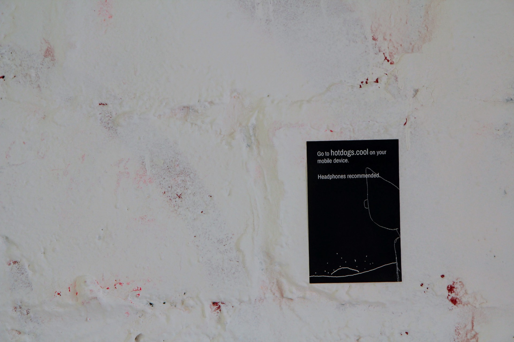

Hot Dogs is a series of mobile web based interactive 3D animations I began developing as part of Crit in Fall 2017. "Hot Dogs Part 1" was shown with other members of Crit at Ghost Gallery in Brooklyn. It was a really fun show. Crit is awesome, I recommend anyone to apply. Since the project was just a website, I made a little poster and installed that in the gallery.
Part 1 is available at the URL hotdogs.cool. It requires a mobile phone with a browser to view and headphones are very recommended.
Part 2, Trampoline, is available at trampoline.cool.
Part 3, Funeral, is available at funeral.cool.


I made a WebVR version using the SteroEffect code from an old Google Cardboard example, it's up at vr.hotdogs.cool. The VR experience is definitely worse than the original. The new WebVR stuff didn't work for what I built in three.js so this is a little cobbled together. Anyway, it's up and you can try it out if you have a Cardboard or Daydream or some other smart phone VR viewer.
The 2D animation in Hotdogs uses an animation tool called lines that I've been developing for a few years.
#screenshotsaturday mustard pic.twitter.com/ugWFkj5ity
— Owen Roberts (@owenribbit) December 3, 2017